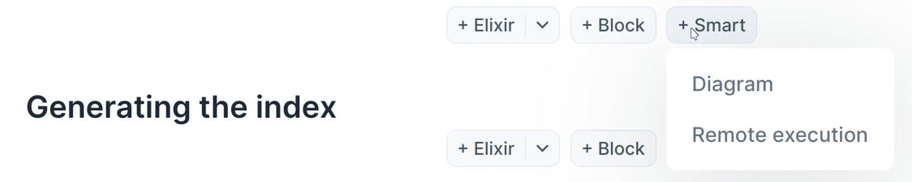

Writing Documents
Index
The writing from within Anoma
One of the more important parts of the Anoma project is understanding how the codebase works, and how it evolves.
A good way to start on this process is by reading and writing documentation and making visual tools to better solidify knowledge for oneself and others.
To better do this, the codebase as a few levels of documentations:
- The specs (link TBA)
- These livebook documents
- Module level documentation
1. is what specifies what Anoma is abstractly.
2. serves the purpose of general knowledge transfer. Some documents serve to provide newcomers with information about various parts of Anoma's development process, others provide visual presentations to various parts of the codebase, while even others provide indepth analys of the codebase.
3. is documents regarding module and function specifics. This is often augmented by 2. for better context and examples.
Making a new document
To create a new document, it is simple as creating a new .livemd file in the folder location you wish it to be organized under.
Thus a file at documentation/contributing/testing/foo.livemd would be organized under the section contribution/testing/.
The file can either be made in livebook itself, or via the host operating system.
Connect to Anoma
One should connect the document to a locally running IEX instance of Anoma.
This let's you take advantage of the pre-installed kino tools, and lets you generate documentation/diagrams over real Anoma Code.
This can be achieved by click on runtime settings:
From here, click on configure and connect it to your running Anoma instance.
Making diagrams
Diagrams are an import piece of documentation.
All the standard livebook tools can be used, but Anoma has some extra dependencies that can help creating documentation.
Namely under, the +Smart section, we can generate out various kinds of documents:

The diagram will give you Kroki diagrams, and the UI will look something like this:

However currently, due to a bug, writing text in the Diagram source will not change the generated diagram.
It is important to click the pencil icon, and edit it by hand.
Generating the index
To have an Index for a document, one must have a section named Index.
Once one has the Index, one can generate it by running mix toc or make docs.
Because livebook does not pull the files for changes, you may have to close the book and open it back up to have the relevant sections be up to date.
Controlling the index sections
To control the order of the index, the project has a file that controls the ordering.
"doc_order.exs" |> File.read!() |> IO.puts()[
{"documentation",
[
{"toc", []},
{"contributing",
[
{"understanding-any-module", []},
{"writing-documents", []}
]},
{"visualization", []},
{"hoon", []}
]}
]:okThis is a priority list of documents, so the higher up a document is, the higher it will be presented in the index.
Running mix toc takes this into account. Note that to make sure your changes are reflected, run mix clean to make sure the wanted order is generated.